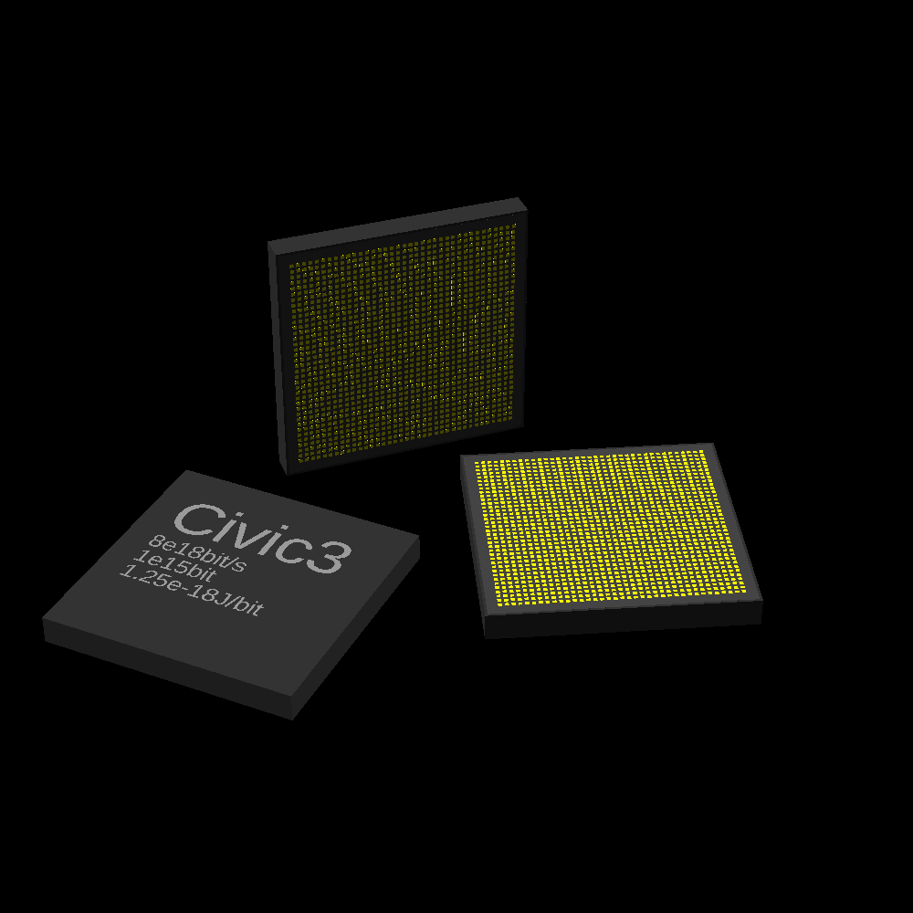

memory: 2e15 bits
efficiency: 2e-16 J/bit
memory: 2e15 bits
efficiency: 1.25e-18 J/bit

| computronium examples | |
|---|---|
| Civic-2 FPGA chip | Civic-3 FPGA chip |
|  |
|
computation rate: 5e16 bits/s memory: 2e15 bits efficiency: 2e-16 J/bit |
computation rate: 8e18 bits/s memory: 2e15 bits efficiency: 1.25e-18 J/bit |
| operations to bit flips cheat sheet unverified | ||||||
|---|---|---|---|---|---|---|
| arbitrary n-bit integer | int4 | int8 | int16 | int32 | int64 | |
| addition/substraction | 12n+2 | 50 | 98 | 194 | 386 | 770 |
| multiplication | 7n2 | 112 | 448 | 1792 | 7168 | 28 672 |
| division | 12n2+2n | 200 | 784 | 3104 | 12 352 | 49 280 |
| Multiply-Accumulate | 7n2+12n+2 | 162 | 546 | 1986 | 7554 | 29 442 |